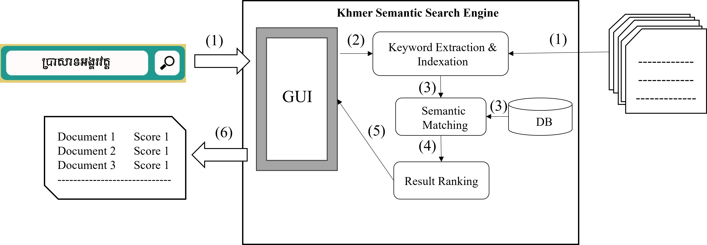
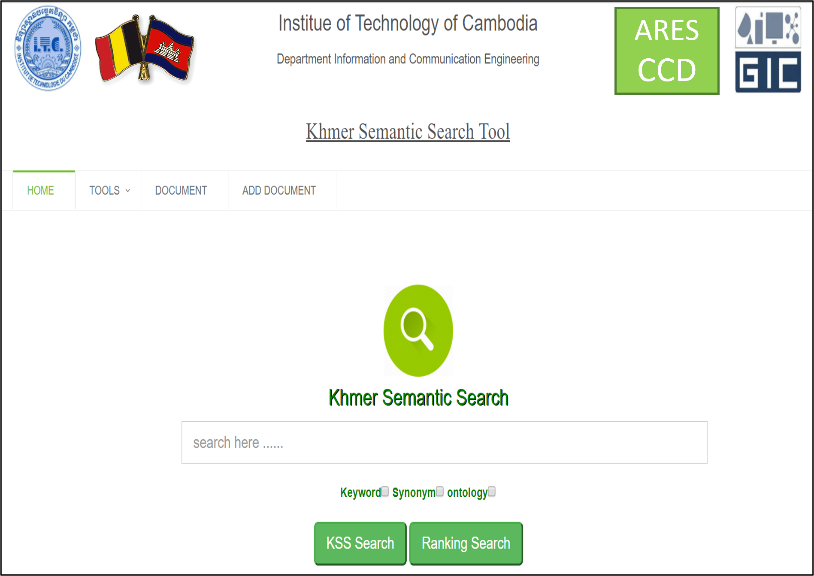

Khmer Semantic Search Engine: Digital Information Access and Document Retrieval

The search engine process is crucial for document content retrieval. For Khmer documents, an effective tool is needed to extract essential keywords and facilitate accurate searches. Despite the daily generation of significant Khmer content, Cambodians struggle to find necessary documents due to the lack of an effective semantic searching tool. Even Google does not deliver high accuracy for Khmer content. Semantic search engines improve search results by employing advanced algorithms to understand various content types. With the rise in Khmer digital content such as reports, articles, and social media feedback enhanced search capabilities are essential. This research proposes the first Khmer Semantic Search Engine (KSE), designed to enhance traditional Khmer search methods. Utilizing semantic matching techniques and formally annotated semantic content, our tool extracts meaningful keywords from user queries, performs precise matching, and provides the best matching offline documents and online URLs. We propose three semantic search frameworks: semantic search based on a keyword dictionary, semantic search based on ontology, and semantic search based on ranking. Additionally, we developed tools for data preparation, including document addition and manual keyword extraction. To evaluate performance, we created a ground truth dataset and addressed issues related to searching and semantic search. Our findings demonstrate that understanding search term semantics can lead to significantly more accurate results.
Khmer, a complex and low-resource language, presents significant challenges for digital content retrieval. Traditional keyword-based search systems often fail to capture the nuances of the language, resulting in poor retrieval accuracy. Our research introduces a semantic search engine that utilizes advanced language modeling techniques, enabling accurate document retrieval and improved user experience in accessing Khmer digital content.
Our system takes a hybrid approach, combining a pre-trained transformer model for semantic embeddings and a fine-tuned classifier to identify relevant document segments. The pipeline is optimized to handle large-scale Khmer documents and can accurately retrieve information based on context-aware queries. The model is further fine-tuned using a contrastive learning approach, aligning semantic similarities between queries and document passages.
The fine-tuning process is divided into two stages: (a) embedding optimization to capture both lexical and semantic features, and (b) query-document alignment using a Siamese network architecture to refine search results based on contextual relevance.
Our evaluation shows that the Khmer Semantic Search Engine significantly outperforms traditional keyword-based methods in both precision and recall, delivering more relevant search results for complex queries. The search engine's effectiveness is demonstrated through various real-world test cases, including academic research papers, historical texts, and legal documents.
| Document ID | Manual Keywords | KSE Keywords | TF-IDF | TextRank | RAKE |
|---|---|---|---|---|---|
| 1 | kw1, kw2, kw3 | kw1, kw2, kw4 | kw2, kw3, kw5 | kw1, kw3, kw6 | kw1, kw4, kw5 |
| 2 | kw4, kw5, kw6 | kw4, kw5, kw7 | kw5, kw6, kw8 | kw4, kw6, kw9 | kw4, kw7, kw8 |
| 3 | kw7, kw8, kw9 | kw7, kw8, kw10 | kw8, kw9, kw11 | kw7, kw9, kw12 | kw7, kw10, kw11 |
| 4 | kw10, kw11, kw12 | kw10, kw11, kw13 | kw11, kw12, kw14 | kw10, kw12, kw15 | kw10, kw13, kw14 |
| 5 | kw13, kw14, kw15 | kw13, kw14, kw16 | kw14, kw15, kw17 | kw13, kw15, kw18 | kw13, kw16, kw17 |
| Manual Extraction Keyword | Extraction Keyword by Tool | Manual Extraction Keyword | Extraction Keyword by Tool |
|---|---|---|---|
| Title | Body | Title | Body |
| Khos Rong | Secret | Sihanoukville | Khos Rong |
| Khmer Tourism | Natural | Sea | Sihanoukville |
| Natural Beauty | Khos Rong | Tourist | Khmer |
| Natural | Khmer Tourism | Khos Rong | Natural |
| Tourism | Rare | Natural Beauty | Beach |
| Secret | Beach | Natural Beauty | Natural Beauty |
| Beach | Beach | Natural |
| Document ID | Title | Body | ||||
|---|---|---|---|---|---|---|
| Precision | Recall | F1 | Precision | Recall | F1 | |
| 1 | 0.80 | 0.66 | 0.36 | 0.77 | 0.77 | 0.78 |
| 2 | 0.66 | 0.80 | 0.72 | 0.81 | 0.90 | 0.85 |
| 3 | 0.57 | 0.44 | 0.50 | 0.83 | 0.55 | 0.66 |
| 4 | 1.00 | 1.00 | 1.00 | 0.88 | 0.80 | 0.84 |
| 5 | 1.00 | 0.57 | 0.72 | 1.00 | 0.72 | 0.84 |
| 1,150 | 0.71 | 0.83 | 0.76 | 1.00 | 0.75 | 0.85 |
| Average | 0.88 | 0.81 | 0.84 | 0.81 | 0.79 | 0.79 |
| Keyword | Manual Extraction | Tool Extraction | Manual Top 5 Documents | Tool Top 5 Documents |
|---|---|---|---|---|
| Khos Rong | Khos Rong | Khos Rong | Doc1, Doc2, Doc3, Doc4, Doc5 | Doc1, Doc3, Doc4, Doc6, Doc7 |
| Khmer Tourism | Khmer Tourism | Natural | Doc2, Doc5, Doc8, Doc11, Doc14 | Doc2, Doc5, Doc9, Doc12, Doc15 |
| Natural Beauty | Natural Beauty | Khos Rong | Doc3, Doc6, Doc9, Doc12, Doc15 | Doc1, Doc3, Doc6, Doc10, Doc13 |
| Natural | Natural | Khmer Tourism | Doc4, Doc7, Doc10, Doc13, Doc16 | Doc4, Doc7, Doc11, Doc14, Doc17 |
| Tourist | Tourist | Beach | Doc5, Doc8, Doc11, Doc14, Doc17 | Doc5, Doc8, Doc12, Doc15, Doc18 |
| Total Input Test | F1-Score |
|---|---|
| 1 | 0.71 |
| 2 | 0.87 |
| 3 | 0.48 |
| 4 | 0.79 |
| 5 | 0.77 |
| 100 | 0.71 |
| Average | 0.75 |
The system can also handle complex multi-modal queries, such as combining text and visual elements to extract relevant document sections. By incorporating view synthesis techniques, the search engine can dynamically adjust its output based on user preferences, enhancing user interaction and information accessibility.
The Khmer Semantic Search Engine is adaptable to a wide range of document types and contexts, offering customization options based on user requirements. Whether it's legal documents, academic texts, or historical archives, the system maintains a high level of fidelity in terms of context and semantic accuracy.
Our system can be extended to support document accessorization and annotation tasks, such as highlighting key phrases, adding metadata, and integrating cross-references. These features enable more comprehensive document management and access for users, making the Khmer Semantic Search Engine a versatile tool for both research and practical applications.
This project aims to promote digital inclusivity and preservation for low-resource languages like Khmer. By providing a robust and accessible information retrieval system, we hope to empower researchers, educators, and the general public to access and engage with Khmer digital content more effectively. The potential for misuse, however, must be carefully considered, and efforts should be made to ensure the ethical deployment of such systems.
@article{thuon2024khmersemanticsearch,
title={Khmer Semantic Search Engine: Digital Information Access and Document Retrieval},
author={Thuon, Nimol},
booktitle={arXiv preprint arxiv:2406.09320v1},
year={2024}
}
Acknowledgements: I would like to thank my research team at ITC for their support, as well as colleagues and mentors who have provided invaluable feedback throughout this project.